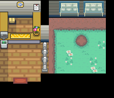

拉鲁拉丝（全国图鉴 No.0280）

怎样获得
群聚（大量出现）
按区域关联，同一区域的多张地图共用；激活方式未由静态表证明。
- 34号道路（区域 159）
进化
本槽的进化去向
- → 奇鲁莉安 ｜ 达到 Lv.20
数据来源
- 内部槽：0392
- 属性：超能 / 妖精 ｜ 种族值合计 198
- 种族值：HP 28 ｜ 攻击 25 ｜ 防御 25 ｜ 特攻 45 ｜ 特防 35 ｜ 速度 40
- 捕获率字段：235（表值；实际捕获还受精灵球/状态/等级影响）
- 蛋群：不定形 / 人形 ｜ 成长曲线：SLOW
- 基础数据：
wiki_export/core/data/species.json - 全国图鉴映射：
wiki_export/core/data/national_dex.json - 进化数据：
wiki_export/core/data/evolutions.json - 获取数据：
wiki_export/world/data/acquisition_by_species.json（species_id 392） - 遭遇表：
wiki_export/world/data/encounters.json - 地图：
wiki_export/world/data/maps.json - 进化方式符号：
wiki_export/enrichment/reference_only/evolution_methods.json（参考表） - 道具/招式名称：
wiki_export/core/data/items.json、wiki_export/core/data/moves.json - 证据状态：群聚激活方式未由静态表证明
地点地图
共享RGB底图；点击可缩放定位。数字对应本页相关地点，不代表地图上全部事件。
34号道路

地图范围记录：当前资料没有精确人物／遭遇坐标。
34号道路

地图范围记录：当前资料没有精确人物／遭遇坐标。
34号道路 · 五之岛旧布局

地图范围记录：当前资料没有精确人物／遭遇坐标。
本图保留原FiveIsland_ResortGorgeous布局，当前图块资源与旧布局不匹配；地区段名称被改为34号道路，不能将它当作当前城都34号道路。原始布局与点位保留供查阅。
34号道路

地图范围记录：当前资料没有精确人物／遭遇坐标。
34号道路

地图范围记录：当前资料没有精确人物／遭遇坐标。 底图有9个图块缺少原始数据。
34号道路

地图范围记录：当前资料没有精确人物／遭遇坐标。 底图有9个图块缺少原始数据。
展开其余 1 张地点地图
34号道路

地图范围记录：当前资料没有精确人物／遭遇坐标。 底图有4个图块缺少原始数据。